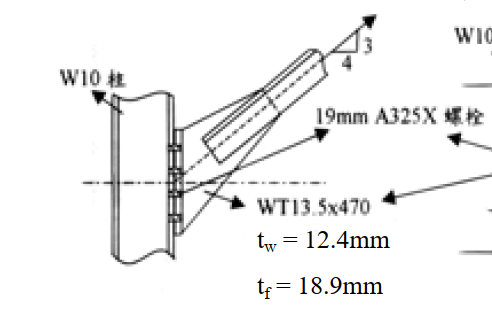
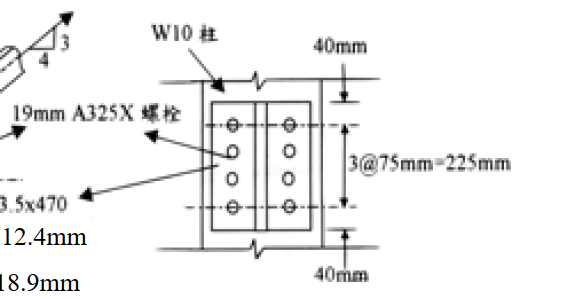
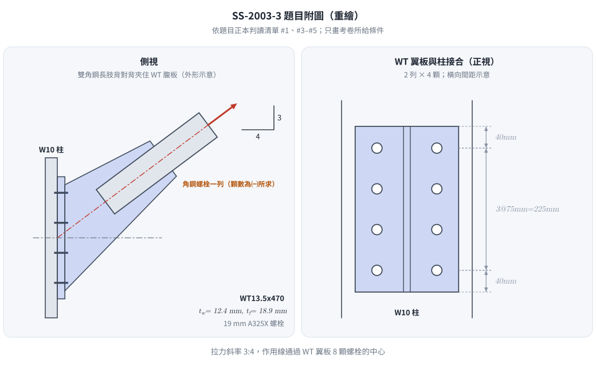
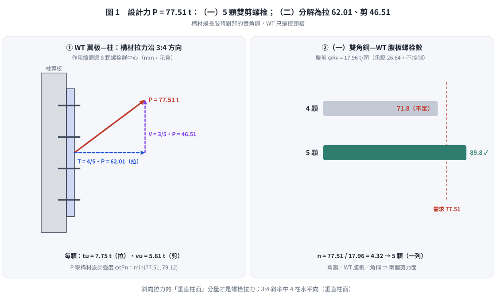
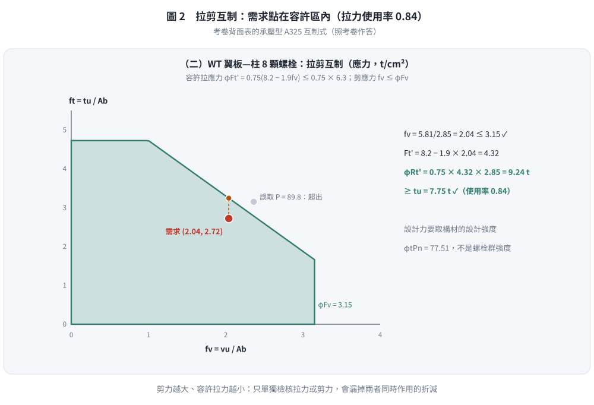

📄 題目正本：考卷原文・附圖・判讀清單（已確認）
SS-2003-3 題目正本
本檔只記錄考卷上寫了什麼、圖上畫了什麼，不含任何解法。解析見同資料夾
SS-2003-3.md。
判讀清單經使用者確認前，狀態為「待確認」；確認後本檔原則上不再修改（改動須回考卷原圖並記 log）。
| 項目 | 內容 |
|---|---|
| 考卷 | raw/exams/SS-2003_鋼結構設計.pdf 第 1（正面）題文、2（背面）附表 頁，第三題 |
| 考年 | 民國 92 年（2003） |
| 配分 | 25 分 |
| 附圖 | 2 張：接合側視 SS-2003-3-fig-1.png；WT 翼板螺栓配置 SS-2003-3-fig-2.png |
| 判讀狀態 | 已確認（2026-11-02 使用者確認，含「不確定」項之解讀；轉錄同日，PyMuPDF 110 dpi 全頁＋關鍵處 400–500 dpi 局部目視，盲讀後才比對既有解析） |
1. 考卷原文（逐字）
三、如圖示長肢背對背雙角鋼受拉構材與柱之接合，接合全部採用標稱直徑 19 mm 之 A325X 承壓型螺栓（標準孔），螺栓孔附近之變形非為設計之考量因素。計算時必須扣除之螺栓孔徑為 22 mm。已知柱和 WT 型鋼強度足夠。（25 分）
㈠試依極限設計法決定雙角鋼與 WT 型鋼腹板接合所需螺栓數量。假設螺栓至構材邊距大於 1.5 倍之螺栓直徑，且螺栓心距大於 3 倍之螺栓直徑，並將螺栓排成一列。不必考慮塊狀剪力。
㈡已知柱和 WT 型鋼以 8 顆螺栓接合，試依極限設計法此接合強度是否足夠？參考資料：
構材之 $F_y = 2.5\ \text{ton/cm}^2$、$F_u = 4.1\ \text{ton/cm}^2$ 雙角鋼：厚度 $t = 9.5$ mm、雙角鋼總面積 $A_g = 34.45\ \text{cm}^2$
螺栓：斷面積 $A_b = 2.85\ \text{cm}^2$，$F_v = 4.2\ \text{ton/cm}^2$，$F_t = 6.3\ \text{ton/cm}^2$ $P_n = F_yA_g$，$\phi_t = 0.9$ $P_n = F_uA_e$，$\phi_t = 0.75$
2. 考卷給的公式、附表與參數
第 2 頁（背面）附表照錄（同頁第四題 ASD 公式不屬本題）：
表 A 螺栓強度
| 螺栓類別 | 拉力強度 $\phi$ | 拉力標稱強度 | 承壓式接合剪力強度 $\phi$ | 剪力標稱強度 |
|---|---|---|---|---|
| A325 螺栓、螺紋不在剪力平面 | 0.75 | 6.30 t/cm² | 0.75 | 3.36 t/cm² |
| A325 螺栓、螺紋在剪力平面 | 0.75 | 6.30 t/cm² | 0.75 | 4.20 t/cm² |
表 B 承壓型接合所用聯結物之極限拉應力（$F_t$），t/cm²
| 聯結物種類 | 螺紋在剪力平面 | 螺紋不在剪力平面 | $\phi$ |
|---|---|---|---|
| A325 螺栓 | $8.2 - 1.9f_v \le 6.3$ | $8.2 - 1.9f_v \le 6.3$ | 0.75 |
表 C 有效面積 $A_e = UA_n$ $A_e = UA_g$
1. 翼板寬度與斷面深度之比不小於 2/3 之 W、H、S 或 I 型鋼，及由此類型鋼切割或符合前述尺度需求之銲接 T 型鋼，且接合須在翼板處。若以螺栓接合則接合處沿應力方向每行螺栓數不少於 3 根 ⋯⋯ $U = 0.90$
2. 不合於上款之 W、H、S、I 或 T 型鋼，及包括組合斷面之其他各種斷面。若以螺栓接合則接合處沿應力方向每行螺栓數不少於 3 根 ⋯⋯ $U = 0.85$
3. 以螺栓接合之所有各種斷面且在接合處沿應力方向每行僅有 2 根螺栓 ⋯⋯ $U = 0.75$
表 D 螺栓孔承壓強度 $\phi R_n$，其中 $\phi = 0.75$，$R_n$＝標稱承壓強度
1. 當 $L_e \ge 1.5d$ 且 $S \ge 3d$ 且作用力方向該排有二個（含）以上之螺栓時，
⑴ 標準孔、或垂直於作用力之槽孔，或摩阻型超大孔或平行於作用力方向之摩阻型槽孔。
當螺栓孔附近之變形非為設計之考量因素時，$R_n = 2.4dtF_u$
當螺栓孔附近之變形為設計之考量因素時，$R_n = L_etF_u \le 3.0dtF_u$
⑵ 對於其他之螺栓接合型式，$R_n = (S - 0.5d)tF_u \le 2.4dtF_u$
⑶ 作用力於垂直方向之長槽孔，$R_n = 2.0dtF_u$
2. 當 $L_e < 1.5d$ 或作用力方向該排僅有一顆螺栓
⑴ 標準孔、或垂直於作用力之槽孔，或摩阻型超大孔或平行於作用力方向之摩阻型槽孔。$R_n = L_etF_u \le 2.4dtF_u$
⑵ 其他螺栓接合，$R_n = (S - 0.5d)tF_u \le 2.4dtF_u$
⑶ 當作用力於平行方向之長槽孔螺栓接合，對單支螺栓或二支螺栓以上（含）之最靠近邊緣之螺栓，$R_n = L_etF_u \le 2.0dtF_u$；其他螺栓接合，$R_n = (S - 0.5d)tF_u \le 2.0dtF_u$
照錄時注意到的考卷原樣（不修正）：
- 表 A 剪力兩列：「螺紋不在剪力平面」3.36、「螺紋在剪力平面」4.20——與一般規定（螺紋不在剪力面強度較高）相反；題文第 1 頁另直接給 $F_v = 4.2$。
- 表 B 兩欄印成相同的 $8.2 - 1.9f_v \le 6.3$。
- 表 D 1⑴ 兩種條件的公式對應與 AISC LRFD 相反（AISC：變形為考量時 $2.4dtF_u$）。
3. 附圖

圖面文字照錄：W10 柱；3；4；19mm A325X 螺栓；WT13.5x470；$t_w$ = 12.4mm；$t_f$ = 18.9mm。

圖面文字照錄：W10 柱；40mm；3@75mm=225mm；40mm。
4. 判讀清單
「把握」標不確定者請優先確認；解讀類項目（題目用字的意思）另標「解讀」。
| # | 項目 | 判讀 | 圖上／題文依據 | 把握 |
|---|---|---|---|---|
| 1 | 構材 | 長肢背對背雙角鋼，兩角鋼長肢夾住 WT 腹板 | 題文「長肢背對背」；側視圖 | 確定 |
| 2 | 角鋼—WT 腹板螺栓的剪力面 | 雙剪（角鋼／WT 腹板／角鋼三層） | 側視圖構材夾 WT 腹板（解讀） | 不確定 → 使用者確認 |
| 3 | 拉力方向 | 斜率 垂直 3：水平 4，作用線通過 WT 翼板螺栓群 | 側視圖斜率三角形；中心點線（400 dpi） | 確定 |
| 4 | WT 斷面 | WT13.5x470（照圖面），$t_w = 12.4$ mm、$t_f = 18.9$ mm | 側視圖文字；「470」疑為 47.0 印法，照錄 | 確定 |
| 5 | WT 翼板—柱螺栓 | 8 顆＝2 列 × 4 顆；垂直間距 3@75 = 225 mm，上下端距 40 mm | 附圖 2 尺寸線；題文「8 顆螺栓」 | 確定 |
| 6 | ㈡ 檢核對象 | WT 翼板與柱翼板間 8 顆螺栓，承受斜向拉力分解的剪力＋拉力 | 題文「柱和 WT 型鋼以 8 顆螺栓接合」（解讀） | 不確定 → 使用者確認 |
| 7 | ㈠ 所求構材設計拉力 | 題目未給設計載重，須由雙角鋼拉力強度（$F_yA_g$、$F_uA_e$ 取小）決定螺栓所需數量 | 題文只給 $P_n$ 兩式與 $\phi_t$（解讀） | 不確定 → 使用者確認 |
| 8 | $F_v$ 取值 | 依題文第 1 頁 $F_v = 4.2$ t/cm²（不從表 A 選列） | 題文（解讀） | 不確定 → 使用者確認 |
| 9 | 承壓公式 | 依題文「變形非為設計之考量因素」＋表 D 1⑴ → $R_n = 2.4dtF_u$（照考卷表） | 題文＋表 D | 確定 |
| 10 | 孔徑 | 淨斷面扣孔 22 mm；承壓用標稱直徑 19 mm | 題文 | 確定 |
| 11 | 塊狀剪力 | ㈠ 不考慮 | 題文 | 確定 |
轉錄：2026-11-02（SS-U1-1 題目正本推廣・批 1）｜確認：2026-11-02 使用者確認
考題編號：SS-2003-3
主分類： SS-U1-1 拉力及壓力桿件
副分類： SS-U1-4 接合之分析與設計
設計法： LRFD
標籤： 接合設計 剪力遲滯 U值 螺栓接合 A325X 淨斷面斷裂 WT斷面 承壓型螺栓 有效淨面積 雙角鋼 雙剪 拉剪互制 螺栓數量設計
1. 題目（考卷原文見題目正本）
考卷原文、公式／附表、附圖與判讀清單（已確認）見
SS-2003-3-problem.md。本節只列解題時最容易讀錯的地方與本解使用的記號；題意以題目正本為準。

圖 1 題目附圖重繪（依題目正本判讀清單 #1、#3–#5；WT 外形與螺栓橫向間距為示意）。斜率三角形標出 3:4、作用線畫到翼板螺栓群中心，攔下斜率讀反或把作用線偏心；正視圖標出 40／3@75／40 mm，攔下端距與間距讀錯。
常見誤讀
| 項目 | 正確判讀 | 常見誤讀 |
|---|---|---|
| 構材 | 長肢背對背雙角鋼；WT 為接頭板 | 把 WT 當成受拉構材（舊版解析即如此） |
| 角鋼—WT 腹板螺栓 | 角鋼／WT 腹板／角鋼 → 雙剪 | 單剪 |
| ㈠ 所求 | 題未給外力，以雙角鋼設計拉力強度決定螺栓數 | 自行假設設計載重 |
| ㈡ 檢核對象 | WT 翼板—柱 8 顆螺栓，受 3:4 斜向力分解之拉剪互制 | 檢核角鋼那一列螺栓 |
| 考卷背面表 | 剪力表兩列、承壓表兩條件與 AISC 相反，照考卷作答；$F_v$ 取題文 4.2 t/cm² | 改用 AISC 值或自行對調 |
本解記號： 螺栓 $d = 19$ mm（扣孔 22 mm）、$A_b = 2.85$ cm²；雙角鋼 $t = 0.95$ cm、$A_g = 34.45$ cm²；$F_y = 2.5$、$F_u = 4.1$、$F_v = 4.2$、$F_t = 6.3$ t/cm²；力的斜率 垂直 3：水平 4。
2. 考題核心精神與出題者意圖 (Core Concepts & Examiner's Intent)
本題是一個兩段式傳力的斜撐接頭：
雙角鋼（拉力構材） ──(一) 一列螺栓、雙剪──▶ WT 腹板 ──WT 本身（題目說強度足夠）──▶ WT 翼板 ──(二) 8 顆螺栓、拉＋剪──▶ 柱翼板
出題意圖：
1. （一）設計題：題目沒給外力，接合要能發揮構材本身的設計強度 → 先算構材 $\phi_tP_n$（降伏、斷裂取小），再以「單栓強度」反推顆數。關鍵是看出雙角鋼夾 WT 腹板＝雙剪。
2. （二）檢核題：力是斜的（3:4），到了柱面，水平分量把螺栓拉離柱面、垂直分量讓螺栓受剪 → 承壓型螺栓的拉剪互制。
3. 題目刻意交代「變形非設計考量」、「邊距 > 1.5d、心距 > 3d」（對應背面承壓表第 1 款）、「不必考慮塊狀剪力」、「扣除孔徑 22 mm」；背面還印了拉剪互制式 $F_t = 8.2 - 1.9f_v$——這些都是作答要照用的條件。
3. 解題戰略地圖與陷阱分析 (Strategic Roadmap & Trap Analysis)
（一） 構材 $\phi_tP_n$（GSY、NSF 取小）→ 單栓設計強度（雙剪 vs 承壓取小）→ $n = \phi_tP_n / \phi R_n$ 無條件進位
（二） $P$ 分解為拉 $0.8P$、剪 $0.6P$ → 每栓 $t_u, v_u$ → 剪力檢核 → 互制後的容許拉應力 $F_t'$ → 拉力檢核
| 陷阱 | 錯誤做法 | 正確做法 |
|---|---|---|
| ❶ 讀錯題意 | 把（一）當成「已知 3 顆求強度」、（二）當成「8 顆的塊狀剪力」 | （一）是決定顆數；（二）是 WT 與柱之間 8 顆螺栓受拉＋剪 |
| ❷ 單剪／雙剪 | 單剪 $0.75F_vA_b = 8.98$ t | 雙角鋼夾 WT 腹板，兩個剪力面：17.96 t/顆 |
| ❸ 扣除孔徑 | 自行加 2 mm 用 2.4 cm | 題目明寫「計算時必須扣除之螺栓孔徑為 22 mm」→ 2.2 cm |
| ❹ 扣孔的板厚 | 扣 WT 腹板厚 1.24 cm | 構材是雙角鋼：每支角鋼扣一孔，$2\times2.2\times0.95$ |
| ❺ 塊狀剪力 | 自行檢核塊狀剪力 | 題目明示不必考慮 |
| ❻ 斜向力 | 8 顆只檢核剪力 | 水平分量使螺栓受拉，要做拉剪互制 |
3.5 變數層次分析（Variable Hierarchy Analysis）
複習提示：解題後，在每個卡住的知識點「卡關?」欄標記
⚠；第二次複習時只看有⚠的項目。
最終目標：（一）構材 $\boxed{\phi_tP_n} = 77.5$ t → 單栓雙剪 $\boxed{\phi R_n} = 17.96$ t → $\boxed{n} = 5$ 顆；（二）每栓 $t_u = 7.75$ t、$v_u = 5.81$ t → $\boxed{\phi R_t'} = 9.24$ t ≥ 7.75 t → 足夠
主要公式（$\boxed{\phantom{x}}$ = 未知，待推導）
$$\boxed{\phi_tP_n} = \min\left(0.9F_yA_g,\ 0.75F_uUA_n\right),\quad A_n = A_g - 2d_ht$$
$$\boxed{\phi R_n} = \min\left(0.75F_vA_b\times2,\ 0.75\times2.4\,d\,(2t)F_u\right),\qquad \boxed{n} = \left\lceil\frac{\phi_tP_n}{\phi R_n}\right\rceil$$
$$t_u = \frac{0.8P}{8},\quad v_u = \frac{0.6P}{8},\quad f_v = \frac{v_u}{A_b},\quad \boxed{F_t'} = 8.2 - 1.9f_v \le 6.3\ \text{t/cm}^2\ \text{（考卷表）}$$
L1：題目直接給定
| 符號 | 數值 | 說明 |
|---|---|---|
| $F_y$、$F_u$ | 2.5、4.1 t/cm² | 構材 |
| $A_g$、$t$ | 34.45 cm²、0.95 cm | 雙角鋼總面積、單支角鋼厚 |
| $d$、$d_h$ | 1.9 cm、2.2 cm | 螺栓直徑、扣除孔徑（題目指定） |
| $A_b$、$F_v$、$F_t$ | 2.85 cm²、4.2、6.3 t/cm² | A325X |
| 力的方向 | 垂直 3：水平 4 | 圖示 |
| 柱面螺栓 | 8 顆（2 列 × 4） | 圖示 |
| 承壓 | 變形非考量 → $R_n = 2.4dtF_u$ | 考卷背面表 |
| 拉剪互制 | $F_t = 8.2 - 1.9f_v \le 6.3$，$\phi = 0.75$ | 考卷背面表 |
L2：需知識點推導
Step 1：構材設計強度
| 符號 | 公式 / 來源 | 卡關? |
|---|---|---|
| GSY | $0.9\times2.5\times34.45 = 77.51$ t | |
| $A_n$ | $34.45 - 2\times2.2\times0.95 = 30.27$ cm² | |
| $U$ | 單列 ≥ 3 栓、僅長肢連接 → 0.85 | |
| NSF | $0.75\times4.1\times0.85\times30.27 = 79.12$ t | |
| $\phi_tP_n$ | 77.51 t（降伏控制） |
Step 2：（一）螺栓數量
| 符號 | 公式 / 來源 | 卡關? |
|---|---|---|
| 雙剪 | $0.75\times4.2\times2.85\times2 = 17.96$ t | |
| 承壓 | $0.75\times2.4\times1.9\times1.9\times4.1 = 26.64$ t（考卷表：變形非考量） | |
| $n$ | $77.51/17.96 = 4.32$ → 5 顆 |
Step 3：（二）柱面 8 顆拉剪互制
| 符號 | 公式 / 來源 | 卡關? |
|---|---|---|
| $T$、$V$ | $0.8\times77.51 = 62.01$ t、$0.6\times77.51 = 46.51$ t | |
| $t_u$、$v_u$ | 7.75 t、5.81 t | |
| $f_v$ | $5.81/2.85 = 2.04 \le \phi F_v = 3.15$ ✓ | |
| $F_t'$ | $8.2 - 1.9(2.04) = 4.32 \le 6.3$ t/cm² | |
| $\phi R_t'$ | $0.75\times4.32\times2.85 = 9.24$ t ≥ 7.75 ✓ |
L3：深層知識（不懂就卡住）
| 知識點 | 說明 | 卡關? |
|---|---|---|
| 雙角鋼夾板＝雙剪 | 螺栓穿過三層板，有兩個剪力面 | |
| 沒給外力怎麼設計接合 | 接合要發揮構材強度：以構材 $\phi_tP_n$ 為設計力 | |
| $U = 0.85$ | 舊 LRFD 表列：非 W 形斷面、每列 ≥ 3 栓 | |
| 承壓公式的條件 | 邊距 ≥ 1.5d、心距 ≥ 3d、力方向 ≥ 2 顆才適用第 1 款；考卷表的「變形是否為考量」與 AISC 對應相反，作答照考卷 | |
| 承壓型螺栓拉剪互制 | 受剪會降低可用的拉力強度：考卷表 $F_t = 8.2 - 1.9f_v \le 6.3$ t/cm² |
4. 步驟化詳細計算過程 (Step-by-Step Detailed Calculation)
4.1 構材設計強度（兩小題共用的設計力）
全斷面降伏：
$$\phi_tP_n = 0.9\times2.5\times34.45 = 77.51\ \text{t}$$
淨斷面斷裂： 兩支角鋼各扣一個孔（單列螺栓），扣除孔徑依題目取 2.2 cm：
$$A_n = 34.45 - 2\times2.2\times0.95 = 30.27\ \text{cm}^2$$
只有長肢連接、短肢未連接 → 有剪力遲滯。角鋼尺寸未給，無法算 $1 - \bar x/L$；依舊版 LRFD（B3）表列，非 W 形斷面、每列螺栓 ≥ 3 顆時 $U = 0.85$（（一）的結果為 5 顆，符合）：
$$A_e = 0.85\times30.27 = 25.73\ \text{cm}^2,\qquad \phi_tP_n = 0.75\times4.1\times25.73 = 79.12\ \text{t}$$
$$\boxed{\phi_tP_n = \min(77.51,\ 79.12) = 77.51\ \text{t}\ \ \text{（降伏控制）}}$$
4.2（一）雙角鋼與 WT 腹板所需螺栓數
單栓剪力（雙剪）： 螺栓穿過「角鋼—WT 腹板—角鋼」，兩個剪力面；A325X 螺紋不在剪力面上，$F_v = 4.2$ t/cm²：
$$\phi R_v = 0.75\times4.2\times2.85\times2 = 17.96\ \text{t/顆}$$
單栓承壓： 邊距 ≥ 1.5d、心距 ≥ 3d、一列多顆 → 背面承壓表第 1 款；題目說孔附近變形非設計考量 → 照考卷表 $R_n = 2.4dtF_u$。WT 強度足夠，只檢核兩支角鋼（總厚 $2\times0.95 = 1.9$ cm）：
$$\phi R_p = 0.75\times2.4\times1.9\times1.9\times4.1 = 26.64\ \text{t/顆} > 17.96$$
→ 單栓由剪力控制，17.96 t。
$$n = \frac{77.51}{17.96} = 4.32 \quad\Rightarrow\quad \boxed{n = 5\ \text{顆（排成一列）}}$$
檢核：$5\times17.96 = 89.8\ \text{t} \ge 77.51\ \text{t}$ ✓；每列 5 顆 ≥ 3 顆，$U = 0.85$ 的前提成立 ✓。（塊狀剪力依題意不檢核。）

圖 1 設計力取構材設計強度 $\phi_tP_n = 77.51$ t：（一）雙剪每顆 17.96 t，需 5 顆；（二）沿 3:4 分解為拉 62.01、剪 46.51 t。這張圖攔的是把 WT 當構材、用單剪、3:4 分量對調（拉剪互換）。
4.3（二）WT 翼板與柱的 8 顆螺栓
設計力： 取構材設計強度 $P = 77.51$ t，沿 3:4 方向：
$$T = \tfrac{4}{5}P = 62.01\ \text{t（垂直柱面，使螺栓受拉）},\qquad V = \tfrac{3}{5}P = 46.51\ \text{t（平行柱面，使螺栓受剪）}$$
作用線通過螺栓群中心（圖示），8 顆均分：
$$t_u = \frac{62.01}{8} = 7.75\ \text{t},\qquad v_u = \frac{46.51}{8} = 5.81\ \text{t}$$
剪力檢核（單剪）：
$$f_v = \frac{5.81}{2.85} = 2.04\ \text{t/cm}^2 \le \phi F_v = 0.75\times4.2 = 3.15\ \text{t/cm}^2\ \ \checkmark$$
拉剪互制（承壓型 A325）： 依考卷背面表，$F_t = 8.2 - 1.9f_v \le 6.3$ t/cm²，$\phi = 0.75$：
$$F_t' = 8.2 - 1.9\times2.04 = 4.32\ \text{t/cm}^2 \le 6.3\ \text{t/cm}^2$$
$$\phi R_t' = 0.75\times4.32\times2.85 = 9.24\ \text{t/顆} \ \ge\ t_u = 7.75\ \text{t}\ \ \checkmark$$
（若依 AISC LRFD 原表對螺紋不在剪力面的 A325-X：$F_t' = 117 - 1.5f_v$ ksi $= 8.23 - 1.5\times2.04 = 5.17$ t/cm²，$\phi R_t' = 11.04$ t，結論相同。）
雙路徑驗算（以題給 $F_t = 6.3$ 做圓形互制）：
$$\left(\frac{7.75}{0.75\times6.3\times2.85}\right)^2 + \left(\frac{5.81}{0.75\times4.2\times2.85}\right)^2 = 0.576^2 + 0.648^2 = 0.75 \le 1.0\ \ \checkmark$$
柱面承壓： 柱與 WT 強度足夠（題目）。
$$\boxed{\text{8 顆螺栓接合強度足夠（拉力使用率 0.84、剪力 0.65）}}$$
設計力的取法：接合要能傳遞構材的設計強度，故取 $P = \phi_tP_n = 77.51$ t。若誤取（一）螺栓群的強度 $5\times17.96 = 89.8$ t：$f_v = 2.36$、$F_t' = 3.71$、$\phi R_t' = 7.93$ t < $t_u = 8.98$ t，會判為不足——設計力的定義會改變結論，作答時要寫清楚。

圖 2 拉剪互制：$f_v = 2.04$ 時容許 $\phi R_t' = 9.24$ t ≥ $t_u = 7.75$ t（使用率 0.84）。這張圖攔的是拉力、剪力分開檢核而漏掉互制折減，以及拿螺栓群強度 89.8 t 當設計力。
5. 關鍵爭議點與進階探討 (Critical Issues & Advanced Discussion)
5.1 為什麼是「雙剪」？
「長肢背對背」的雙角鋼中間留有間隙，正好夾住 WT 的腹板。螺栓穿過三層鋼板，構材的力由兩支角鋼分別傳給中間的 WT 腹板，每顆螺栓有兩個剪力面。誤用單剪會讓顆數算成 $77.51/8.98 = 8.6 \to 9$ 顆，多出將近一倍。
5.2 考卷承壓表與 AISC 的對應相反
考卷背面寫「變形非為設計考量 → $R_n = 2.4dtF_u$；變形為設計考量 → $R_n = L_etF_u \le 3.0dtF_u$」。AISC LRFD J3.10 的原意相反：變形是設計考量時用較保守的 $2.4dtF_u$，不是考量時才放寬到 $L_etF_u \le 3.0dtF_u$。
本題照考卷表取 $2.4dtF_u$（26.64 t/顆），不控制。若依 AISC 原意取 $L_etF_u$、且 $L_e$ 只知「大於 1.5d」而取 1.5d：最靠端部那顆 $\phi R_n = 0.75\times1.5\times1.9\times1.9\times4.1 = 16.65$ t，略小於雙剪 17.96 t；5 顆的群組強度 $16.65 + 4\times17.96 = 88.5$ t ≥ 77.51 t，仍為 5 顆。兩種讀法答案一致。
5.3 撬力（prying action）
WT 翼板受拉時若翼板不夠厚，翼板外緣會壓在柱面上產生撬力，使螺栓實際拉力大於 $t_u$。題目未給螺栓列距與翼板寬度，且說「柱和 WT 強度足夠」，故不計；實務設計須檢核（$t_f = 18.9$ mm 相對 19 mm 螺栓屬厚翼板，撬力通常不大）。
5.4 舊解錯在哪裡
| 項目 | 舊解 | 更正 |
|---|---|---|
| 構材 | 「WT13.5×470 拉力構材」 | 構材是雙角鋼，WT 是接頭板 |
| （一） | 已知 3 顆，求各破壞模式強度 | 決定顆數 → 5 顆 |
| 剪力面 | 單剪 | 雙剪 |
| 扣除孔徑 | 2.2 + 0.2 = 2.4 cm | 題目明定 2.2 cm |
| 淨面積 | $34.45 - 2.4\times1.24$（扣 WT 腹板厚） | $34.45 - 2\times2.2\times0.95$（兩支角鋼各扣一孔） |
| （二） | 8 顆的塊狀剪力 | WT 與柱之間 8 顆的拉剪互制 → 足夠 |
6. 依最新規範（AISC 360-16／-22）對照
| 項目 | 考卷（舊 LRFD） | AISC 360-16／-22 | 對本題的影響 |
|---|---|---|---|
| A325-X 剪力 $F_{nv}$ | 60 ksi（4.2 t/cm²） | 68 ksi（4.78 t/cm²） | 雙剪 20.44 t/顆 → $77.51/20.44 = 3.8$ → 4 顆 |
| $U$ | 表列 0.85 | 表 D3.1：$1 - \bar x/l$，或雙角鋼 Case 8（每列 ≥ 4 栓 0.80、3 栓 0.60） | 角鋼尺寸未給，無法精算；若 4 顆取 0.80 → NSF 74.5 t，改由斷裂控制 |
| 承壓 | 考卷表：$2.4dtF_u$（變形非考量） | $\min(2.4dtF_u,\ 1.2l_ctF_u)$（變形為考量）；$\min(3.0dtF_u,\ 1.5l_ctF_u)$（非考量） | 不控制 |
| 拉剪互制 | 考卷表：$F_t = 8.2 - 1.9f_v \le 6.3$ t/cm² | $F_{nt}' = 1.3F_{nt} - \dfrac{F_{nt}}{\phi F_{nv}}f_{rv} \le F_{nt}$ | $\phi R_t' = 9.89$ t ≥ 7.75 t，仍足夠 |
| 撬力 | 未規定 | AISC Manual Part 9 須檢核 | 實務需另算 |
結論： 新規範下單栓剪力提高（60 → 68 ksi），（一）可減為 4 顆，但 $U$ 改以幾何決定、可能使斷裂改為控制；（二）在新互制式下仍足夠。考場依考卷給的參考資料作答。
解析完成時間：2026-04-xx
修正日期：2026-11-01（題意整題重判：構材為長肢背對背雙角鋼、WT 為接頭板。（一）改為「決定螺栓數」，雙剪 17.96 t/顆、構材 77.51 t → 5 顆；（二）改為 WT 與柱之間 8 顆螺栓受 3:4 斜向力之拉剪互制，依考卷背面表 $F_t = 8.2 - 1.9f_v$ → 足夠（使用率 0.84）。更正扣除孔徑為題目指定之 2.2 cm、淨面積改扣兩支角鋼；刪除題目明示不必考慮之塊狀剪力；新增 §6 AISC 360-16／-22 對照）
圖解補繪：2026-11-03（向量圖 2 張，腳本 gen_SS-2003-3.py，改輸入可原地重跑；SVG 供 wiki／PDF，2× PNG 供 pptx／影片）
驗證狀態：unverified
修正日期：2026-11-02（§1 全文重述改為指向題目正本 SS-2003-3-problem.md（已確認）＋常見誤讀＋本解記號，避免題意兩份不同步；解題內容與答案不變）
修正日期：2026-11-03（§1 補入題目附圖重繪 figs/SS-2003-3-fig-1-problem.svg（依已確認的題目正本判讀清單，腳本 gen_SS-2003-3.py，可重跑）；解題內容與答案不變）